4 From algebra to circuits
When Boolean algebra was initially introduced - around the mid-nineteenth century - it was seen as a simple connection between mathematics and logic, but almost a century later - in the 1930s - it was realized that this algebra could be applied to the design and implementation of electrical circuits: in particular, it was Claude Shannon (the father of information theory) who understood that the open and closed states of a switch could be made to correspond to the true and false of Boolean variables, and in this way an electrical signal passing through these switches would follow exactly what was predicted by Boolean algebra.
4.1 Logic gates
If Boolean variables are represented by electrical signals, the operators through which to compose these variables are represented by circuits, also called logic gates. Let’s see below how the three main operations are converted into circuits:
NOT (negation)
The input is connected through a resistor to a bipolar junction transistor. When there is no current (input \(0\)) the transistor is off and no current flows from the collector, so at the output (\(V_{out}\)) there is a voltage \(V_{CC}\) due to which current flows; when there is current (input \(1\)) the transistor is on and this time the current flows through the collector, bringing the voltage to zero and consequently interrupting the electrical signal from \(V_{out}\).
By placing two NOT gates in sequence, a buffer is obtained, which returns the same input at the input; it is used to delay an electrical signal.
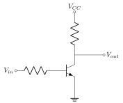
OR (logical sum)
If at least one of the two inputs is HIGH the relative diode will be in conduction allowing the voltage signal to reach the output; if both inputs are LOW, instead, the two diodes are interrupted and no current will reach the output, since the circuit is connected to ground.
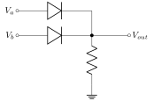
AND (logical product)
If at least one of the two inputs is LOW the relative diode will be in conduction preventing the voltage signal from reaching the output; if both inputs are HIGH, instead, the two diodes are interrupted, diverting the current from the \(V_{CC}\) to the output.
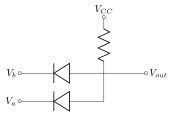
Below are the symbols of the logic gates used in the circuits:
```{=latex}
\input{Grafiche/Figure/dellalgebra-ai-circuiti-simboli-porte-logiche.tex}
```4.1.1 Functional completeness NOR and NAND
In circuits, usually, the NOR and NAND gates are preferred to the logic gates just introduced:
```{=latex}
\input{Grafiche/Figure/dellalgebra-ai-circuiti-simboli-porte-logiche-nand-nor.tex}
```The reason is that the OR and AND gates are made up of passive elements that, in the long run, degrade the signal; the inversion of the signal, instead, requires the implementation of amplifiers (like the transistor seen in the NOT gate) that preserve its integrity.
It is also possible to demonstrate that the NOR and NAND functions, individually, can completely replace the use of the OR and AND operators: this property is called functional completeness and is shown in figure [fig:dallalgebra-ai-circuiti-costruzioni-nand-nor].
The NAND gates are used to write sums of products, while the NOR gates to write products of sums, and from the principle of duality we know that, as long as the inputs are complementary to each other, the two quantities will be the dual of each other:
4.2 XOR operator
The last operator that we have left to study is the XOR, also called Exclusive OR and represented by the symbol \(\oplus\), whose truth table has already been shown in table [tab:fondamentali-di-algebra-booleana-funzioni-due-variabili]:
The name comes from the fact that the input is \(1\) only if the two inputs are different from each other, and in this sense it is an . In other words we could say that this operator returns \(1\) only if one of the two inputs is \(1\), or if only one of the two outputs is \(0\); since these two definitions are equivalent, we immediately guess the following property:
\[ A\oplus B=\bar{A}\oplus\bar{B} \]
In canonical form (using minterms) the result is the following:
\[ \label{eq:dallalgebra-ai-circuiti-xor-operatore} A\oplus B=A\bar{B}+\bar{A}B \]
from which the commutativity of the XOR is evident.
The negated form will therefore be:
\[ \overbar{A\oplus B}=\overbar{A\bar{B}+\bar{A}B}=\overbar{A\bar{B}}\cdot\overbar{\bar{A}B}=(\bar{A}+B)(A+\bar{B})=\bar{A}\bar{B}+AB \]
being \(A\bar{A}=B\bar{B}=0\).
Connecting back to [eq:dallalgebra-ai-circuiti-xor-operatore] we can write:
\[ \overbar{A\oplus B}=\bar{A}\oplus B=A\oplus\bar{B} \]
Let’s also verify that the XOR can also be used to replace the NOT, OR and AND operations:
From [eq:dallalgebra-ai-circuiti-xor-operatore] it is evident that if we want to go from \(A\) to \(\bar{A}\) it is sufficient to set \(B=1\), in fact:
\[ \label{eq:dallalgebra-ai-circuiti-xor-negazione} A\oplus1=A\cdot0+\bar{A}\cdot1=\bar{A} \]
The [eq:dallalgebra-ai-circuiti-xor-negazione] is also useful for the OR because of De Morgan’s law:
\[ A+B=\overbar{\bar{A}\bar{B}}=\bar{A}\bar{B}\oplus1=\left[\left(A\oplus1\right)\left(B\oplus1\right)\right]\oplus1 \]
Similarly, always for De Morgan’s law, we can also derive the expression for the AND:
\[ AB=\overbar{\bar{A}+\bar{B}}=(\bar{A}+\bar{B})\oplus1=[(A\oplus1)+(B\oplus1)]\oplus1 \]
Finally, the symbol of the logic gate associated with the XOR is the following:
Prove that
\[ (A\oplus B)\oplus C=A\oplus(B\oplus C)=B\oplus(A\oplus C) \]
Let’s start from the first member and make the second XOR explicit:
\[ (A\oplus B)\oplus C=(A\oplus B)\bar{C}+(\overbar{A\oplus B})C \]
At this point let’s make the XOR and the negated XOR explicit:
\[ (A\oplus B)\oplus C=(A\bar{B}+\bar{A}B)\bar{C}+(\bar{A}\bar{B}+AB)C \]
Let’s now multiply the various terms:
\[ \label{eq:dallalgebra-ai-circuiti-esercizio-xor} (A\oplus B)\oplus C=A\bar{B}\bar{C}+\bar{A}B\bar{C}+\bar{A}\bar{B}C+ABC \]
Let’s collect the terms in \(A\) and in \(\bar{A}\) and proceed backwards in the calculations:
\[ \begin{aligned} (A\oplus B)\oplus C&=A(\bar{B}\bar{C}+BC)+\bar{A}(B\bar{C}+\bar{B}C)=\\ &=A(\overbar{B\oplus C})+\bar{A}(B\oplus C)=A\oplus(B\oplus C) \end{aligned} \]
We have thus proved the first equality; to prove also the second one let’s go back to equation [eq:dallalgebra-ai-circuiti-esercizio-xor] and perform the same calculations but collecting \(B\) and \(\bar{B}\):
\[ \begin{aligned} (A\oplus B)\oplus C&=B(\bar{A}\bar{C}+AC)+\bar{B}(A\bar{C}+\bar{A}C)=\\ &=B(\overbar{A\oplus C})+\bar{B}(A\oplus C)=B\oplus(A\oplus C) \end{aligned} \]
4.3 Graphical simplification
To build efficient circuits it is necessary to simplify as much as possible the algebraic expressions of the Boolean functions that these circuits express.
The most efficient way to simplify functions is given by the use of Karnaugh maps, which express a function in its canonical form through a grid. Let’s start from functions with two variables, whose Karnaugh map is as follows:
The various cells represent the minterms: the first column, in fact, is associated with the variable \(A\), while the second with its complement \(\bar{A}\), and the same will apply to the rows with \(B\) and \(\bar{B}\).
Adding a variable means doubling the number of cells, as shown by the three-variable and four-variable maps:
In each map the minterms that make up the canonical expression of the function are marked. The simplification will take place by grouping some marked cells according to certain rules:
Pairs
Two adjacent cells, horizontally or vertically, imply the presence of two terms that differ only by a negated variable: this variable can be simplified.
Let’s look at the following example:
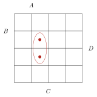
The function will be
\[ f(A,B,C,D)=ABCD+A\bar{B}CD \]
The only variable that changes is \(B\); in fact, by factoring out the rest, we get:
\[ f(A,B,C,D)=ACD(B+\bar{B})=ACD \]
An important thing to underline is that the map is connected at the edges with itself, in the sense that the left column is continuous with the right column and the top row with the bottom one.
We can therefore also simplify a configuration like the following:
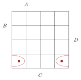
In fact:
\[ f(A,B,C,D)=A\bar{B}\bar{C}\bar{D}+\bar{A}\bar{B}\bar{C}\bar{D}=\bar{B}\bar{C}\bar{D}(A+\bar{A})=\bar{B}\bar{C}\bar{D} \]
Quads
Four consecutive cells filling a row or a column, or placed at the vertices of a square, imply the variation of two variables that can be simplified.
First example:
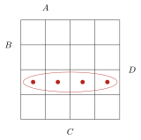
\[ \begin{aligned} f(A,B,C,D)&=A\bar{B}\bar{C}D+A\bar{B}CD+\bar{A}\bar{B}CD+\bar{A}\bar{B}\bar{C}D=\\ &=A\bar{B}D(C+\bar{C})+\bar{A}\bar{B}D(C+\bar{C})=\\ &=A\bar{B}D+\bar{A}\bar{B}D=\bar{B}D(A+\bar{A})=\bar{B}D \end{aligned} \]
Second example (remembering the connection between the opposite sides of the map):
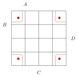
\[ \begin{aligned} f(A,B,C,D)&=AB\bar{C}\bar{D}+\bar{A}B\bar{C}\bar{D}+\bar{A}\bar{B}\bar{C}\bar{D}+A\bar{B}\bar{C}\bar{D}=\\ &=B\bar{C}\bar{D}(A+\bar{A})+\bar{B}\bar{C}\bar{D}(A+\bar{A})=\\ &=B\bar{C}\bar{D}+\bar{B}\bar{C}\bar{D}=\bar{C}\bar{D}(B+\bar{B})=\bar{C}\bar{D} \end{aligned} \]
Octets
Eight consecutive cells filling two adjacent rows or two adjacent columns imply the variation of three variables that can be simplified, leaving a single variable to describe these terms.
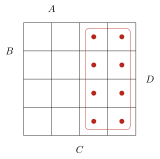
\[ \begin{split} F(A,B,C,D)&=\begin{aligned}[t] &\bar{A}BC\bar{D}+\bar{A}B\bar{C}\bar{D}+\bar{A}BCD+\bar{A}B\bar{C}D\\ &+\bar{A}\bar{B}CD+\bar{A}\bar{B}\bar{C}D+\bar{A}\bar{B}C\bar{D}+\bar{A}\bar{B}\bar{C}\bar{D} \end{aligned}\\ &=\bar{A}B\bar{D}+\bar{A}BD+\bar{A}\bar{B}D+\bar{A}\bar{B}\bar{D}=\\ &=\bar{A}B+\bar{A}\bar{B}=\bar{A} \end{split} \]
Simplify, through the Karnaugh map, the following function written in canonical form:
\[ \begin{aligned} f(A,B,C,D)=&\bar{A}\bar{B}\bar{C}\bar{D}+A\bar{B}\bar{C}\bar{D}+\bar{A}B\bar{C}\bar{D}+AB\bar{C}\bar{D}\\ &+A\bar{B}C\bar{D}+ABC\bar{D}+A\bar{B}CD+ABCD \end{aligned} \]
Also, report the solution in both NAND and NOR form.
Let’s report the Karnaugh map:
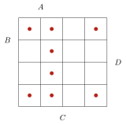
Let’s identify two quads:
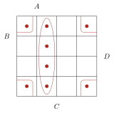
In the quad along the column the only variables that do not change are \(A\) and \(C\), while as for the one at the corners the only ones are \(\bar{C}\) and \(\bar{D}\). Simplifying according to the rules, therefore, it will result:
\[ f(A,B,C,D)=AC+\bar{C}\bar{D} \]
This is also the NAND form, being written as a sum of products of variables. The quickest way to get the NOR form is to calculate the negated form of the function from the Karnaugh map, which will be the of the one previously reported:
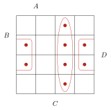
From the simplification rules we get
\[ \bar{f}(A,B,C,D)=\bar{A}C+\bar{C}D \]
from which, according to Morgan’s law:
\[ f(A,B,C,D)=\overbar{\bar{A}C+\bar{C}D}=(A+\bar{C})(C+\bar{D}) \]
Simplify the following function:
\[ f(A,B,C)=AB\bar{C}+ABC+\bar{A}BC+\bar{A}B\bar{C}+A\bar{B}C+\bar{A}\bar{B}C \]
Let’s draw the Karnaugh map:
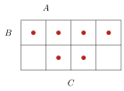
Let’s identify a quad and a pair:
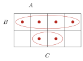
Along the first row the only variable that does not change is \(B\), while in the pair \(\bar{B}\) and \(C\) do not vary, therefore:
\[ f(A,B,C)=B+\bar{B}C \]
We can also note that we could have performed the pairings differently:
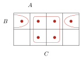
From this we get:
\[ f(A,B,C)=C+B\bar{C} \]
The two quantities are equal, in fact:
\[ \begin{aligned} B+\bar{B}C&=B(C+\bar{C})+\bar{B}C=BC+B\bar{C}+\bar{B}C=\\ &=C(B+\bar{B})+B\bar{C}=C+B\bar{C} \end{aligned} \]
A further possibility was to enclose everything in two quads:
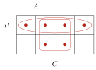
Considering the same points in different groupings is allowed, since algebraically it means repeating the term to be added several times and for the property this does not change the Boolean function.
So we find:
\[ f(A,B,C)=B+C \]
which is analogous to the two previous expressions, in fact:
\[ B+\bar{B}C=(B+\bar{B})(B+C)=1\cdot(B+C)=B+C \]